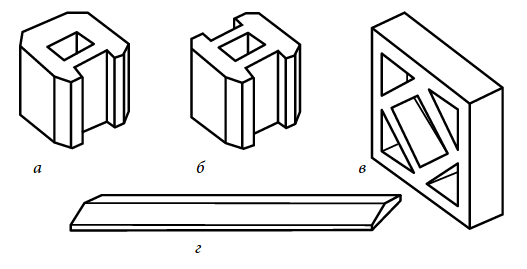

Наскрізні декоративні бетонні блоки можна використовувати для побудови декоративної стіни або садової огорожі, яка пропускає світло і повітря. При будівництві стін їх використовують як у вигляді самостоящих елементів, так і в якості декоративних елементів у комбінації з іншими стіновими матеріалами.
Ажурний блок являє собою квадрат зі стороною 300 мм і товщиною 100 мм, виготовлений з білого цементу в формах, які забезпечують отримання на їх поверхні наскрізних отворів (рис. 46). Кожен блок може мати власний малюнок або кілька блоків разом можуть утворювати єдиний малюнок.

Блоки, для зведення декоративних ажурних стінок: а — торцевий стовповиї блок; б — проміжний стовповиї блок; в — ажурний блок; г — захисна плитка
Випускають також суцільні блоки (без наскрізних отворів) з нанесеним на поверхню малюнком. Завдяки відсутності отворів вони міцніші і призначені для створення контрасту з ажурними блоками.
У комплекті зазвичай йдуть наконечники для стовпів та плитки для захисту стіни від опадів. Їх укладають на розчин по гребеню стіни.
Декоративні блоки істотно відрізняються від інших стінових елементів квадратної формою, тому при кладці між ними відсутня горизонтальна перев'язка. Блоки просто укладають штабелем, формуючи вертикальні колони. При будівництві огорожі з цих блоків необхідно забезпечити їм надійну опору.
Для підтримки по вертикалі блоки можна укладати між камяними або цегляними стовпами, але краще використовувати спеціальні стовпи з пазами. У будь-якому випадку відстань між стовпами повинна бути не більше 3 м.
Стовпи також збирають з окремих блоків, які мають вигляд куба зі стороною 200 мм, наскрізним отвором у центрі і пазами з однієї або декількох сторін. Кінцеві блоки мають по одному пазу, кутові і проміжні — по два, а Т-образні стійки — по три паза. Для стін висотою більше 600 мм в центральну частина порожнисту стовпів необхідно закрити за допомогою розчину арматурні прути, металевий кутник або трубу. Крім того, якщо стіна має висоту більш ніж два блоки, слід використовувати і горизонтальне посилення кладки. Для цього в кожний горизонтальний розчинний шов починаючи з третього ряду кладки включають дротяну арматурну сітку по всій довжині прольоту.
Стіну з декоративних блоків можна побудувати поверх низькозї кам'яної стіни. Можна також побудувати стіну тільки з одних блоків, встановивши їх поверх плит покриття (для дуже низьких стін) або на мілкозаглублений стрічковий фундамент з бетонним цоколем. У будь-якому випадку блоки не повинні знаходитись нижче рівня землі.
Щоб побудувати стіну з декоративних блоків, потрібні звичайні інструменти для кладки цегли і розчинна суміш, що складається з 1 частини цементу, 1 частини пластифікатора і 5 частин піску. Якщо немає пластифікатора, можна використовувати суміш з портландцементу, вапна і піску в співвідношенні 1:1:6. Для зведення невеликих стін краще використовувати заздалегідь приготовлену суху суміш, в яку слід додати тільки воду.
Для стіни висотою 1,2 м та довжиною 3 м знадобляться:
— 36 декоративних стінових блоків;
— 12 стовпових блоків;
— 6 кг цементу;
— 36 кг піску;
— 6 кг вапна або 12 мл пластифікатора.
Для фундаменту потрібно ще 50 кг цементу, 145 кг піску і 235 кг наповнювача.